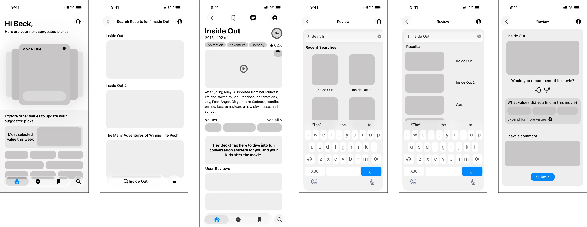
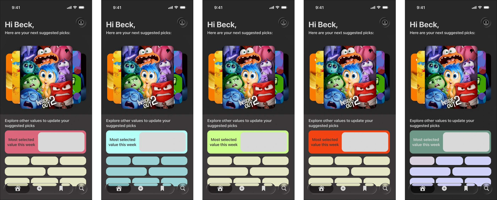
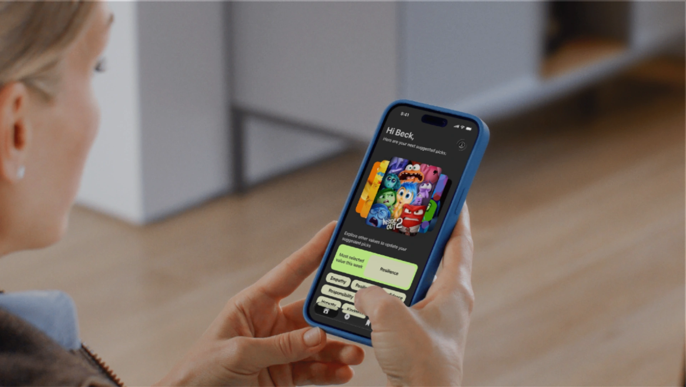
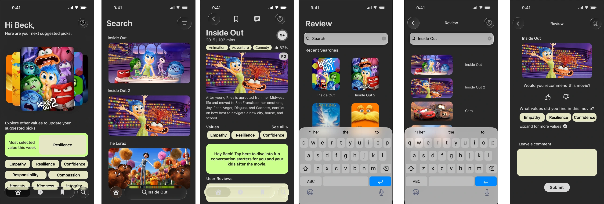

LOOMI
Where parents come together to choose better stories.
PROBLEM
Streaming has made children's content abundant. But volume without curation is noise, and for busy parents the question has shifted from where to find something to watch to whether it is worth watching at all. Netflix offers thousands of children's titles; Disney+ adds hundreds more. Recommendation algorithms are built for engagement, not values. Existing parenting communities are scattered, anecdotal, and too inconsistent to trust. The result is a persistent gap between what children consume and what parents intend, one most families navigate through guesswork rather than informed choice.
PROPOSED SOLUTION
Loomi reframes movie discovery as a values-led decision, backed by a community of parents who have already done the work. Every recommendation surfaces with context rather than just a rating, so parents understand not only what a film is about but what it reinforces. Parents contribute their own assessments, discover content curated around specific values, and build a shared knowledge base that grows more credible as more families use it. The result closes the gap between parental intention and children's consumption, grounded in shared experience rather than algorithmic suggestion.
PROCESS
We started by defining the core user: busy parents of children under 12 who need a quick way to judge whether a film or show is appropriate and value-aligned. From there, we mapped the first app flow from search to recommendations, media details, reviews and value categories. The main design decision was to move beyond generic ratings and make positive values visible earlier in the journey. This helped shape Loomi into a parent-led review system where users could scan content quickly, understand why it mattered and make a more confident viewing decision.

We moved from paper mapping into low-fidelity Figma screens to test how quickly parents could find useful information. The flow focused on search, media details, value tags, parent reviews and review entry, with each screen revealing only the next decision a user needed to make. The key design decision was to surface value-based guidance before asking parents to contribute their own review. This helped us test whether Loomi could feel useful immediately, while still encouraging parents to add their perspective once they understood the product's purpose.

OUTCOME


IMPACT
Helped parents make more confident children's media decisions, measured through user feedback on review clarity and value-based filtering, by designing a prototype that combined recommendation signals, parent-written reviews and value tags into one focused decision-making flow.
MY CONTRIBUTION
As lead designer on Loomi, I owned the product's complete visual language, building the colour system, establishing the typography, and defining the design principles that shaped every interface decision. Working across the full design lifecycle from problem framing through to final delivery, I ensured the visual identity did not just unify the product aesthetically but actively reinforced its core purpose: a trusted, values-led experience that gives parents the confidence to choose what their children watch.
TEAM
- Manu PadmaraagamDesign Lead
- Azif ZaynLead Developer
- Janna NgIntegration Lead
- Andrew WangBusiness / Marketing Lead
- Saptarsi PraptiData Lead